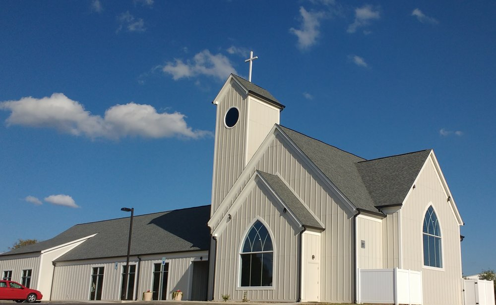

Living Promise began just ten years ago with several members of Living Word in Johnson City. We were looking to begin a church in our own community that kept the Bible as the true Word of God. We desired a church that went beyond the trendy and found its roots in 2,000 years of Christian worship and praise. We craved a church where a sincere Gospel created sincere love for one another.

After renting spaces for a long time we just recently completed construction on our first permanent church home. This new home serves as the place where God comes to us through his Word and we join the chorus of the billions of Christians who have come before us in worship to our God. This new space allows us to better serve one another with a sincere love as Christ has loved us.
Pastor Matt Westra grew up in Cincinnati, Ohio where his father serves as a pastor. His mother works as a nurse and together they raised Matt and his younger brother and sister. He attended Martin Luther College where he pursued his B.A. in Pre-Seminary Studies and graduated in 2007. He then continued his education at Wisconsin Lutheran Seminary and graduated in 2011 He has served internships at churches in Tucson, Arizona and in Milwaukee, Wisconsin.
In August of 2010 Pastor Westra was married to his wonderful bride Rachel. Rachel graduated from Wisconsin Lutheran College in 2009 with a degree in art and enjoys using her abilities to serve God in whatever way she can. They have three mostly wonderful children, Noelle (4) and Andrew (3) and Avery (2 months)
Together they enjoy many outdoor activities: hiking, camping, running and anything that gets them out into God’s beautiful creation are activities that they can be found doing together. Pastor Matt Westra loves the privilege of sharing the message of Jesus in the community of Morristown. He looks forward to meeting all the members of the community so please don't be afraid to visit with us sometime or give him a call.